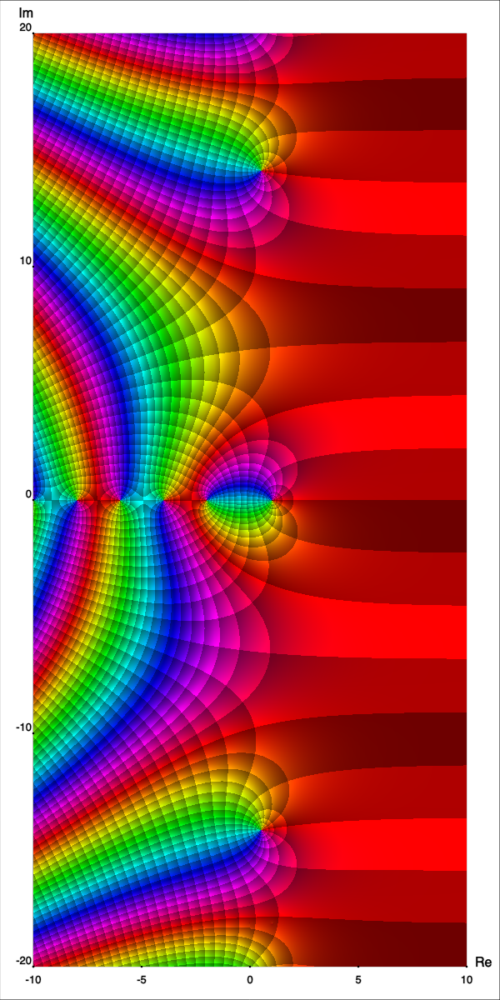

Lecture 6
Theorem 3.2.1. (Comparison test) Let $\sum x_n$ and $\sum y_n$ be series such that $0 \leq x_n \leq y_n$ for all $n \in \N$.
Theorem 3.2.1. (Comparison test) Let $\sum x_n$ and $\sum y_n$ be series such that $0 \leq x_n \leq y_n$ for all $n \in \N$.
Proof. Let's prove item 1. Since $0 \leq x_n \leq y_n,$ the sequences of partial sums are both monotone increasing. Since $x_n \leq y_n$ for all $n$, the partial sums satisfy
$ \ds \sum_{n=1}^k x_n \leq \sum_{n=1}^k y_n, \;\; \forall k. \qquad (3.2) $
Proof.
$ \ds \sum_{n=1}^k x_n \leq \sum_{n=1}^k y_n, \;\; \forall k. \qquad (3.2) $
If $\sum y_n$ converges, the partial sums for the series are bounded. Therefore, there exists some $B \in \R$ such that $\sum_{n=1}^k y_n \leq B$ for all $k$, and so
$\ds \sum_{n=1}^k x_n \leq \sum_{n=1}^k y_n \leq B.$
Proof.
$ \ds \sum_{n=1}^k x_n \leq \sum_{n=1}^k y_n, \;\; \forall k. \qquad (3.2) $
If $\sum y_n$ converges, the partial sums for the series are bounded. Therefore, there exists some $B \in \R$ such that $\sum_{n=1}^k y_n \leq B$ for all $k$, and so
$\ds \sum_{n=1}^k x_n \leq \sum_{n=1}^k y_n \leq B.$
This means that the partial sums for $\sum x_n$ are also bounded. Since the partial sums are a monotone increasing sequence, $\sum x_n$ converges. $\;\bs$
The second item is left as an exercise. 📝
Theorem 3.2.2. ($p$-test) For $p \in \R$, the series \begin{equation*} \sum_{n=1}^\infty \frac{1}{n^p} \end{equation*} converges if and only if $p \gt 1$.
Convergence test for $\sum_{n=1}^\infty \frac{1}{n^p}$
Fun fact! 🧐
|
The function $\ds \zeta(s) :=
\sum_{n=1}^{\infty}\frac{1}{n^s}$ |

Source: 🔗 Domain Coloring |
|---|
Theorem 3.2.3. (Ratio test) Let $\sum x_n$ be a series, $x_n \not= 0$ for all $n$, and such that \begin{equation*} L := \lim_{n\to\infty} \frac{\abs{x_{n+1}}}{\abs{x_n}} \qquad \text{exists.} \end{equation*}
Ratio test
Theorem 3.2.4. (Root test) Let $\sum x_n$ be a series and let $ \displaystyle L := \limsup_{n\to\infty} \, {\abs{x_n}}^{1/n} . $
Theorem 3.2.5. (Alternating series) Let $\{ x_n \}$ be a monotone decreasing sequence of positive real numbers such that $\lim\, x_n = 0$. \begin{equation*} \text{Then }\; \sum_{n=1}^\infty {(-1)}^n x_n \;\text{ converges}. \end{equation*}
👀 Complementary reading 📖
Definition 3.3.1 A series $\sum x_n$ converges absolutely if the series $\sum \abs{x_n}$ converges. If a series converges, but does not converge absolutely, we say it is conditionally convergent.
Theorem 3.3.1. If the series $\sum x_n$ converges absolutely, then it converges.
Absolute convergence
Theorem 3.3.1. If the series $\sum x_n$ converges absolutely, then it converges.
Proof. Consider the partial sums $$s_k = \sum_{n=1}^{k} x_n \quad \text{and}\quad t_k = \sum_{n=1}^{k}\abs{x_n}$$ By assumption $\{t_k\}$ is convergent. In particular, it is Cauchy. Given $\vre >0$ there exists $ N\in \N $ such that $$\abs{t_k- t_j} \lt \vre\quad \forall k, j \geq N.$$ Let us show that $\{s_k\}$ is also Cauchy.
Theorem 3.3.1. If the series $\sum x_n$ converges absolutely, then it converges.
Proof. By the triangle inequality, assuming $k>j$, we have
$\abs{s_k-s_j}$
$=\abs{\left( x_1+ x_2 + \ldots + x_k \right) - \left( x_1+
x_2 + \ldots + x_j \right) }$
$\;= \abs{x_{j+1}+ \ldots + x_k}$
$\leq \abs{x_{j+1}} + \ldots + \abs{x_k}$
$=\abs{t_k - t_j}\lt \vre \quad \forall j, k \geq N.\qquad
\qquad$
Thus $\{s_k\}$ is Cauchy. Hence, by Theorem 2.6.2, $\sum x_n$ converges.
Theorem 3.3.1. If the series $\sum x_n$ converges absolutely, then it converges.
Extra: Notice that
$\abs{s_k} $
$\ds =\abs{\sum_{n=1}^{k}x_n} $
$ \ds\leq \sum_{n=1}^{k} \abs{x_n} $
$= t_k .$
Then $\quad \ds\abs{\lim _{k\ra \infty } s_k} = \lim _{k\ra
\infty } \abs{s_k}$
$\ds\leq \lim _{k\ra \infty } t_k $
Therefore $ \quad \ds \abs{ \sum_{n=1}^\infty x_n } \leq
\sum_{n=1}^\infty \abs{x_n} .\;\;\blacksquare $
Claim: $\ds\sum_{n=1}^{\infty} \frac{(-1)^n}{n^2}$ converges.
Proof. The series $\ds\sum_{n=1}^{\infty} \frac{(-1)^n}{n^2}$ converges absolutely since $\ds\sum_{n=1}^{\infty} \frac{1}{n^2}$ is convergent, using the $p$-test (Theorem 3.2.2) with $p=2>1$. By the previous theorem, $\ds\sum_{n=1}^{\infty} \frac{(-1)^n}{n^2}$ converges.
Consider a series $ \ds\sum_{n=1}^\infty x_n .$ Let $\sigma \colon \N \to \N$ be a bijection. The corresponding rearrangement is the following series: \begin{equation*} \sum_{k=1}^\infty x_{\sigma(k)} . \end{equation*}
Consider a series $ \ds\sum_{n=1}^\infty x_n .$ Let $\sigma \colon \N \to \N$ be a bijection. The corresponding rearrangement is the following series: \begin{equation*} \sum_{k=1}^\infty x_{\sigma(k)} . \end{equation*}
In other words, we sum "the same numbers in a different order." Unlike with finite sums, with series we need to be careful.
The alternating harmonic series $\ds\sum_{n=1}^{\infty} \frac{(-1)^{n+1}}{n}$ does not converge absolutely because $$\sum_{n=1}^{\infty}\abs{ \frac{(-1)^{n+1}}{n}} = \sum_{n=1}^{\infty} \frac{1}{n}$$ is the harmonic series, which diverges. However, it converges conditionally. 📝
The interesting fact about the alternating harmonic series is that we can rearrange the terms so that it diverges. For instance, instead of having
$\ds 1 - \frac{1}{2}+ \frac{1}{3} - \frac{1}{4}+ \frac{1}{5} - \ldots$
The interesting fact about the alternating harmonic series is that we can rearrange the terms so that it diverges. For instance, instead of having
$\ds 1 - \frac{1}{2}+ \frac{1}{3} - \frac{1}{4}+ \frac{1}{5} - \ldots$
We sum
\[ \begin{array}{rrrrrrrrrrrrr} & & 1 & + & \dfrac{1}{3} & + & \dfrac{1}{5} & + & \ldots &+ & \dfrac{1}{999} & - & \dfrac{1}{2} \end{array} \]
\[ \begin{array}{rrrrrrrrrrrrr} &+& \dfrac{1}{1001} &+& \dfrac{1}{1003} &+&\ldots &+& \dfrac{1}{1999} &-&\dfrac{1}{4} \end{array} \]
$\ds + \;\;\;\;\cdots \qquad\qquad\qquad\qquad\qquad\qquad\quad\quad\quad\quad$
The interesting fact about the alternating harmonic series is that we can rearrange the terms so that it diverges. For instance, instead of having
$\ds 1 - \frac{1}{2}+ \frac{1}{3} - \frac{1}{4}+ \frac{1}{5} - \ldots$
\[ \begin{array}{rrrrrrrrrrrrrcl} & & 1 & + & \frac{1}{3} & + & \frac{1}{5} & + & \ldots &+ & \frac{1}{999} & - & \frac{1}{2} & \} & \text{large number!} \\ &+& \frac{1}{1001} &+& \frac{1}{1003} &+& \frac{1}{1005} &+&\ldots &+& \frac{1}{1999} &-&\frac{1}{4} & \} & \text{large again!} \\ & + & \ldots & & & & & & & & & & & & \end{array} \]
Continuing in this way, we have found a way of rearranging the terms in the alternating harmonic series so that the sequence of partial sums for the rearranged series is unbounded, and therefore diverges. 🤯
Theorem 3.4.1. Let $\sum x_n$ be an absolutely convergent series with $L=\sum x_n$. Then, for any bijection $\sigma \colon \N \to \N$, we have that $\sum x_{\sigma(n)}$ is absolutely convergent and $$\sum x_{\sigma(n)}=L.$$
Final remark:
In general, absolutely convergent series have many wonderful
properties.
Conditionally convergent series on the other hand do not
behave as one would expect.
For example, any series $\sum a_n$ that is conditionally
convergent can be rearranged so that the new series diverges or
converges to a different real number.